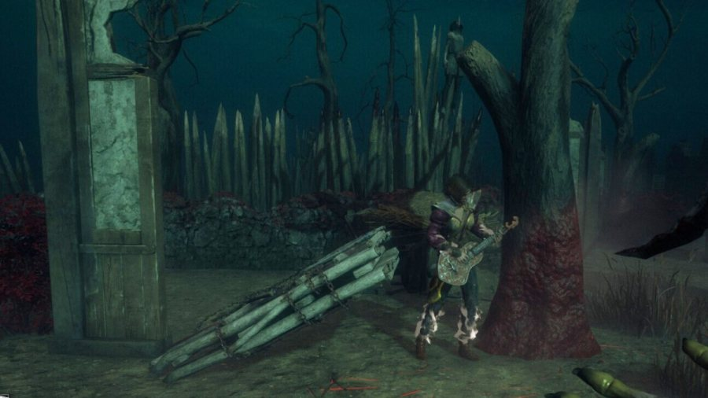

The phantom chase
The killer is on the other side of the map. You drop the pallet. Just in case they develop teleportation.
THREAT LEVEL: IMAGINARYA STUDY IN WASTED POTENTIAL
The art of wasting what could have saved you.
this still happens every game in solo que even in 2026
Some survivors see a second chance.
Others see something to throw on the floor.

A perfectly good pallet. A deeply questionable decision.
01 / THE DEFINITION
Kneeling Pallets / nee·ling pal·its / noun
The act of sacrificing a perfectly good pallet to absolutely nothing. No pressure. No imminent danger. Just a survivor, a prompt, and a profound misunderstanding of restraint.
Often mistaken for “creating distance.” From what remains unclear.02 / DIAGNOSTIC CRITERIA
The killer is on the other side of the map. You drop the pallet. Just in case they develop teleportation.
THREAT LEVEL: IMAGINARYYou greet the killer with a pre-drop at five generators. Hospitality is important. So was that god pallet.
GENERATORS DONE: ZEROThree pallets. One straight line. No looking back. Your teammates inherit a beautifully open floor plan.
RESOURCES LEFT: MEMORIES03 / THE COLLATERAL DAMAGE
You escaped the chase that wasn't happening. Your teammate now gets to run the chase that is. Through a dead zone. With nothing but hope and an increasingly personal opinion of you.
Pallets are a team resource. Apparently, this needed a footnote.A MOMENT OF REFLECTION
“Every pallet dropped is a pallet
your teammates will never see again.”
— THE UNWRITTEN RULES OF THE FOG